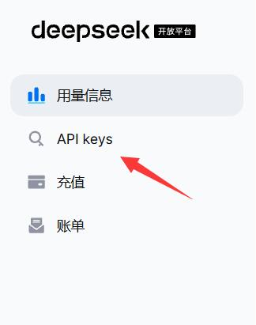
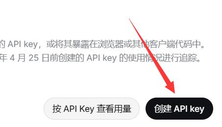
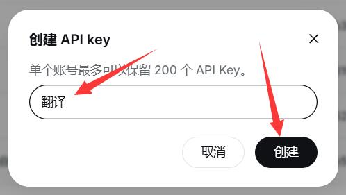
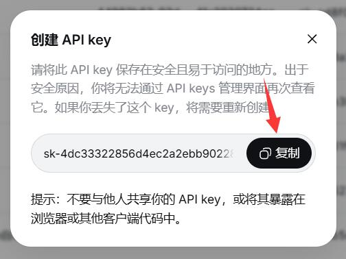
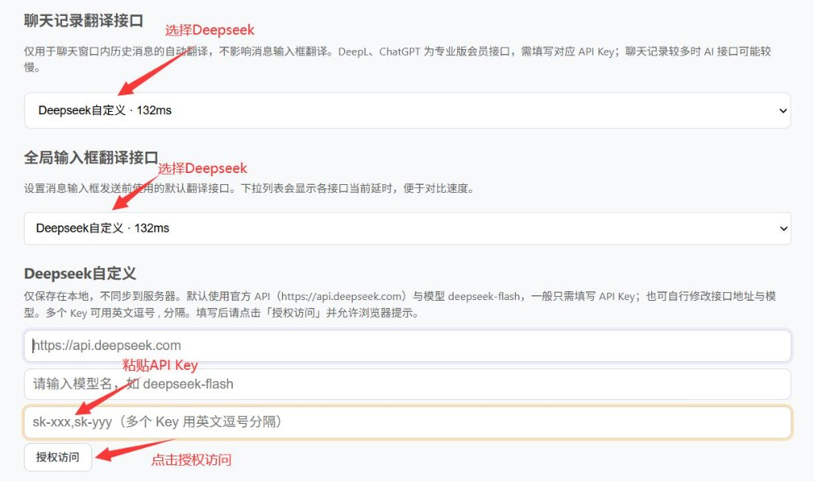
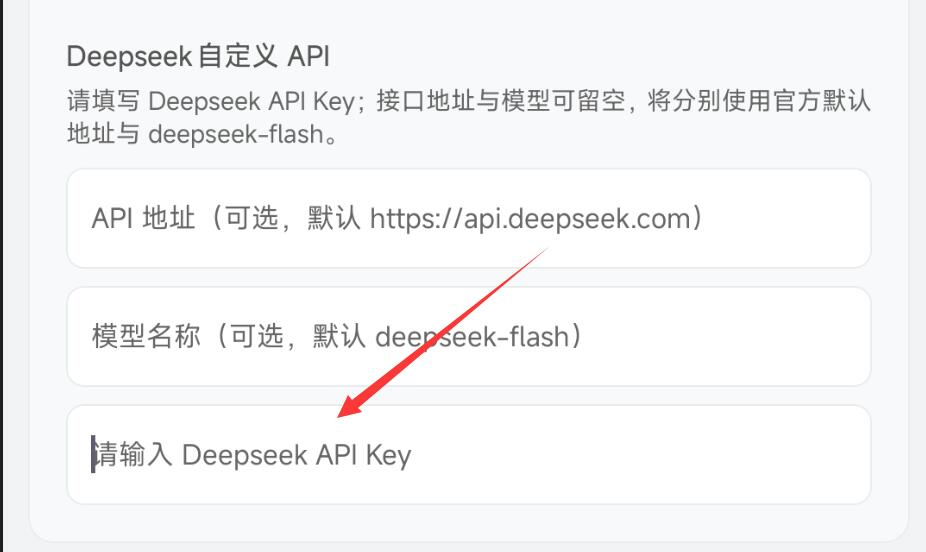

DeepSeek API 申请
专业版及以上可接入 DeepSeek，用于 AI 语义级翻译。按下列步骤申请并复制 API Key，再填入 WATransChat。
1. 打开 DeepSeek 开放平台
访问 https://platform.deepseek.com 并完成登录 / 注册。
2. 进入 API keys
在左侧菜单中点击 API keys（如图红箭头所示）。

3. 创建 API key
进入页面后，点击黑色按钮 创建 API key。

4. 填写名称并创建
在弹窗中输入 Key 名称（例如「翻译」），然后点击 创建。

5. 复制并妥善保存 Key
Key 仅显示一次。请立即点击 复制，保存到安全位置。 关闭后将无法再次查看完整 Key，丢失需重新创建。

提示：不要分享你的 API key，防止泄露后产生意外费用。
6. 填入 WATransChat
复制 Key 后，按您使用的端打开对应入口粘贴即可。建议先小额充值测试连通性，再用于日常翻译。
浏览器扩展
路径：会员中心 → 翻译设置。 将「聊天记录翻译接口」和「全局输入框翻译接口」都选择为 Deepseek自定义，下方会出现配置项。
- 两个接口下拉框均选择 Deepseek自定义。
- 在 API Key 输入框中粘贴刚复制的 Key（多个 Key 可用英文逗号分隔）。
- API 地址、模型名可按需填写，也可留空使用默认值。
- 点击 授权访问 完成配置。

手机端
路径：会员中心 → 翻译设置 → 其它翻译接口，找到 Deepseek 自定义 API 配置项。
- 打开 Deepseek 自定义 API。
- 在「请输入 Deepseek API Key」中粘贴 Key。
- 接口地址与模型可留空，将分别使用官方默认地址与 deepseek-flash。

还有问题？
若以上内容未能解决您的问题，欢迎联系客服获取一对一协助。